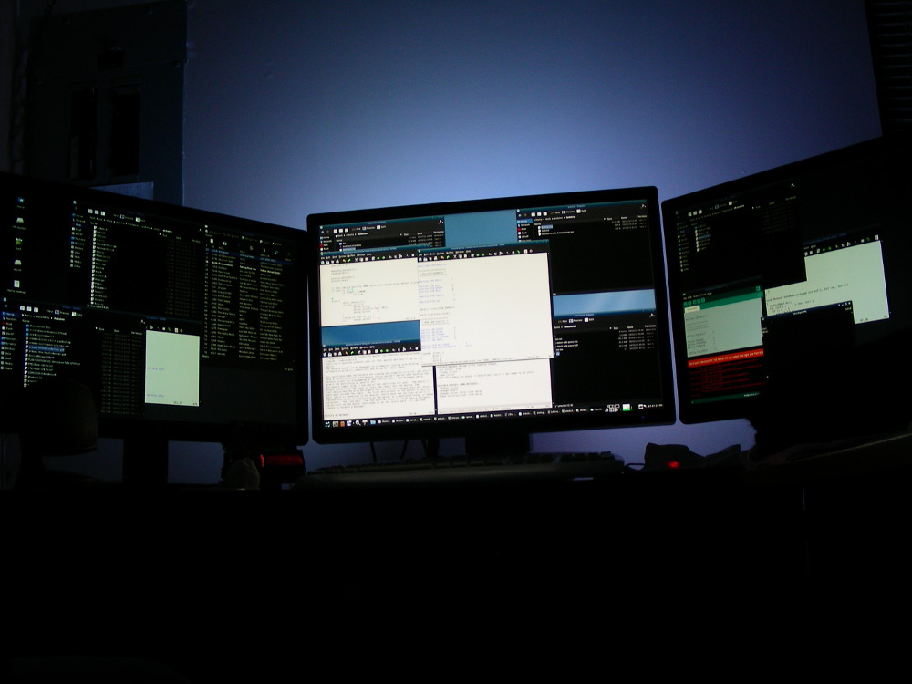
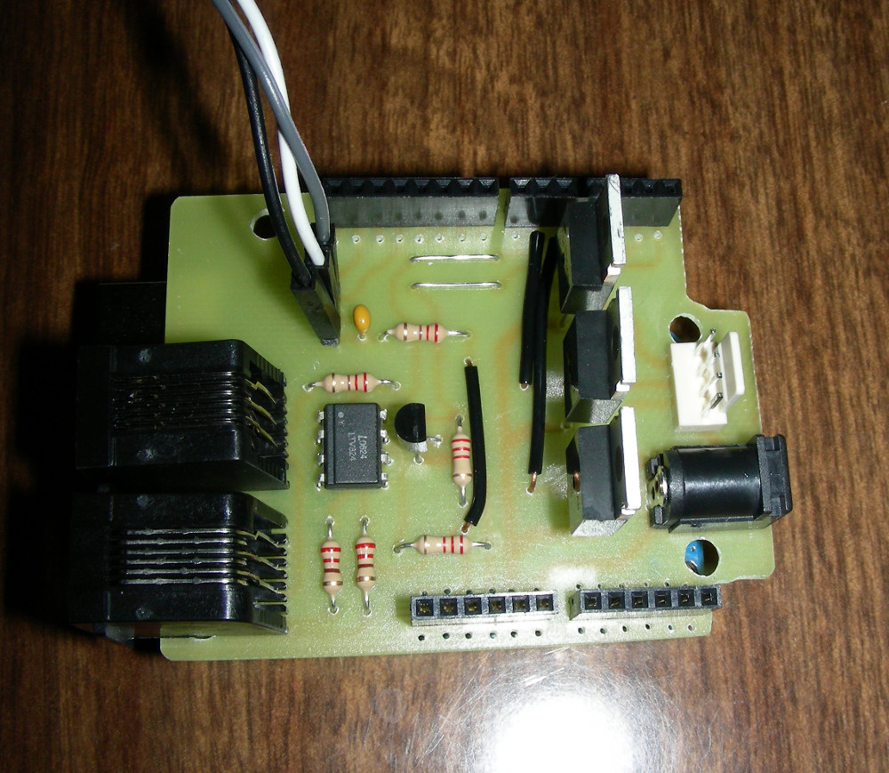
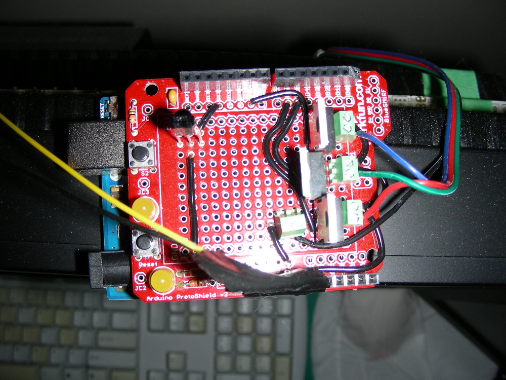
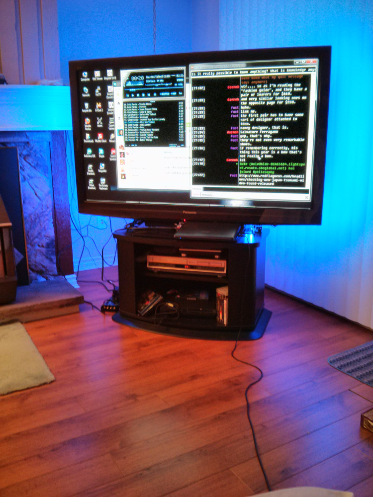
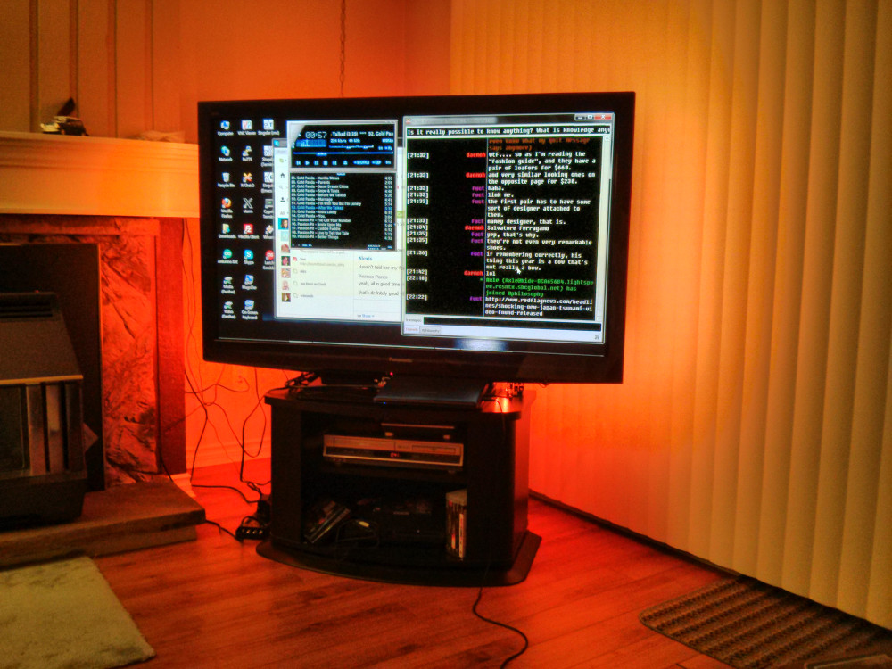
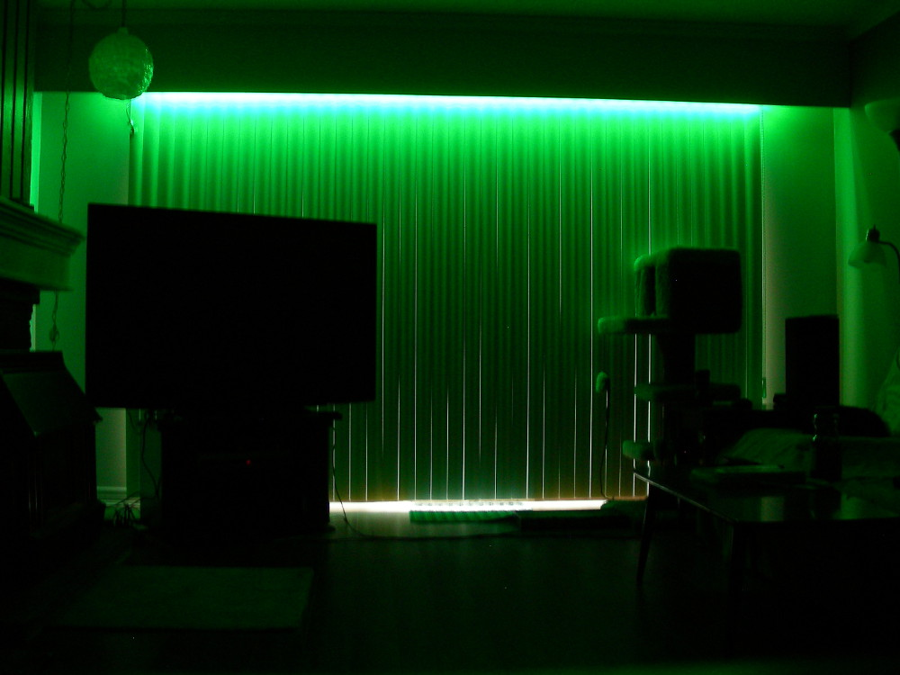
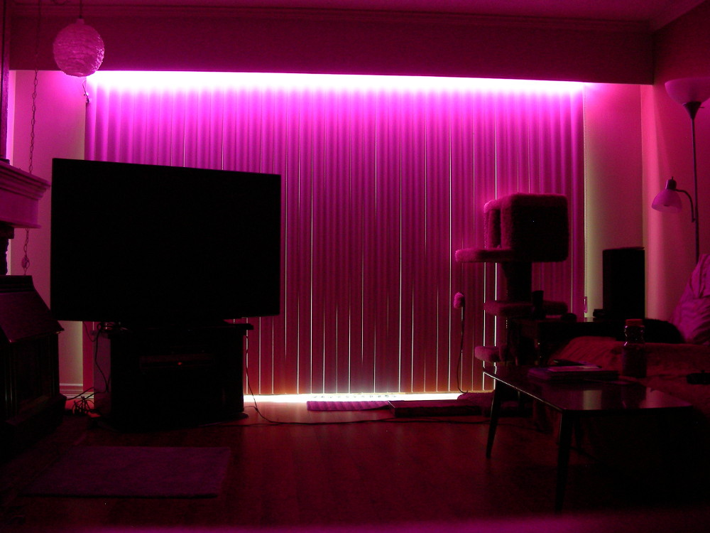
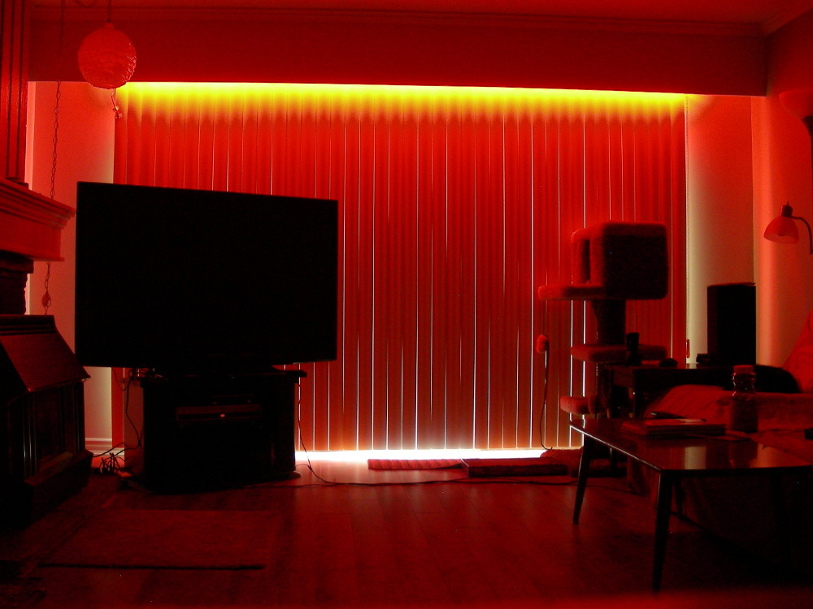

RGBNode
Started February 7, 2013
RGBNode is an Arduino shield that controls an RGB LED strip using MOSFETs, and which communicates with other nodes over a MIDI-based electrical interface with a custom protocol. Multiple RGB nodes can be used to control multiple seperate strips using the same remote control. The nodes can be controlled using a repurposed TV remote via an onboard IR receiever on one of the nodes, or using another project of mine, Android Remote.
Design
A few years ago, I found RGB LED strips for sale on SparkFun's website and thought it would make a good ambient light source for watching TV. I like watching TV in a dark room, but it's difficult to see anything else, so I figured a small bit of light would be perfect. I purchased a 5m roll of strip with 30 LEDs per meter and built a simple prototype shield which used an IR receiver and an old remote for control.
This served me well for over a year until I decided to buy a second strip to put underneath the valance in the living room, so that the light would shine down on the white blinds and fill the room with ambient light. This required a second controller and thus the need for the RGBNode project. I made most of this on the fly, directly designing the PCB using DipTrace, rather than making a schematic first, so there is no schematic available for this project. The circuitry is rather simple, though. The second 5m roll of strip that I purchased has 60 LEDs per meter.
In order to use only one point of control for both controllers, they needed to communicate with eachother and I wanted to use a method that was cheap and easy to adjust. I decided on using the MIDI electrical interface because it's as simple as you can get and doesn't require a specialize transceiver chip. The 5-pin DIN connectors, however, are rather bulky and MIDI cables are not cheap or easy to modify, so I decided to switch to RJ11 jacks and 4-pair flat phone cable, despite the increased chance of electrical noise. Also, to save having to make a special order for the exact optocoupler listed in the MIDI specs, I used an optoisolator that I had on hand (a Lite-On LTV-824). The direct output was rather weak, so I added a transistor to amplify the signal. The MIDI transceiver was originally wired to the ATmega USART, but I later moved it to pins 7 and 8 and used the software serial library to free up the USART for serial communications with the computer.
The MOSFET circuitry is dead simple and a more thorough explaination can be found on LadyAda's site. Since the strip draws an excessive amount of current, I added a dedicated power jack near the MOSFETs so that the full current would not have to pass through the arduino board itself. It is wired to the Vin pin, so it will power the arduino as well. The theoretical maximum current draw of the 30/m strip is 0.6A per meter or 3A for the whole 5m strip. For the 60 LED/m strip, it is 6A for the whole 5m. However, since the strip has it's own resistors and we are using a voltage source to power it, the circuit is susceptible to voltage drop and we wont reach the theoretical current. This could be compensated for by increasing the voltage supply so that the voltage at the start of the strip is 12V, but in this case, I'm using a computer power supply, so that is not easy. The other way to mitigate this and maximize the current (and thus brightness) of the strip is to minimize the resistance between the power supply and where the strip is powered. To this end, I placed the power jack as close to the RGB connector as possible, made the traces as large as possible, and used the largest reasonable size of wire I had on hand to connect the shield to the power supply.
Gallery
       
Get the Source
https://github.com/transistorfet/rgbnodeOr clone with:
git clone git@github.com:transistorfet/rgbnode